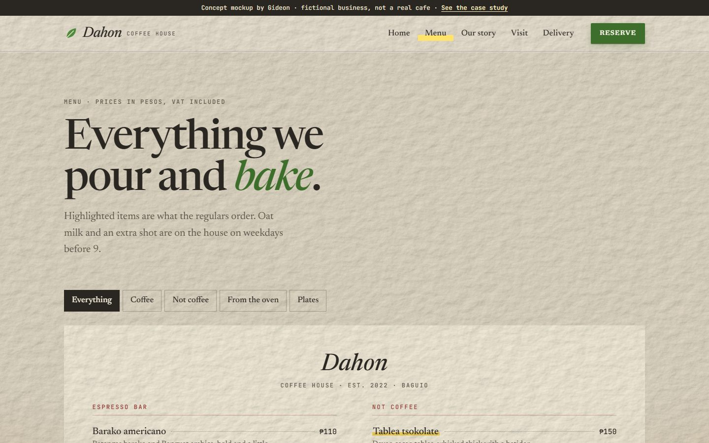
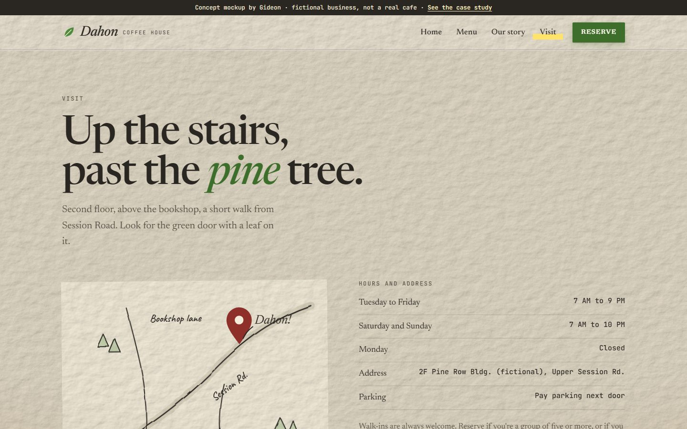
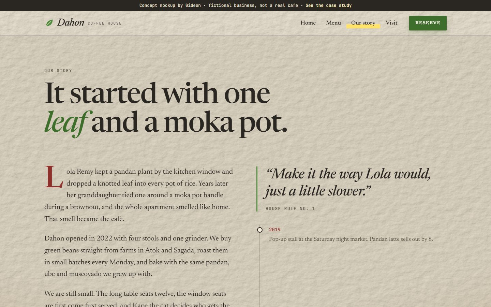
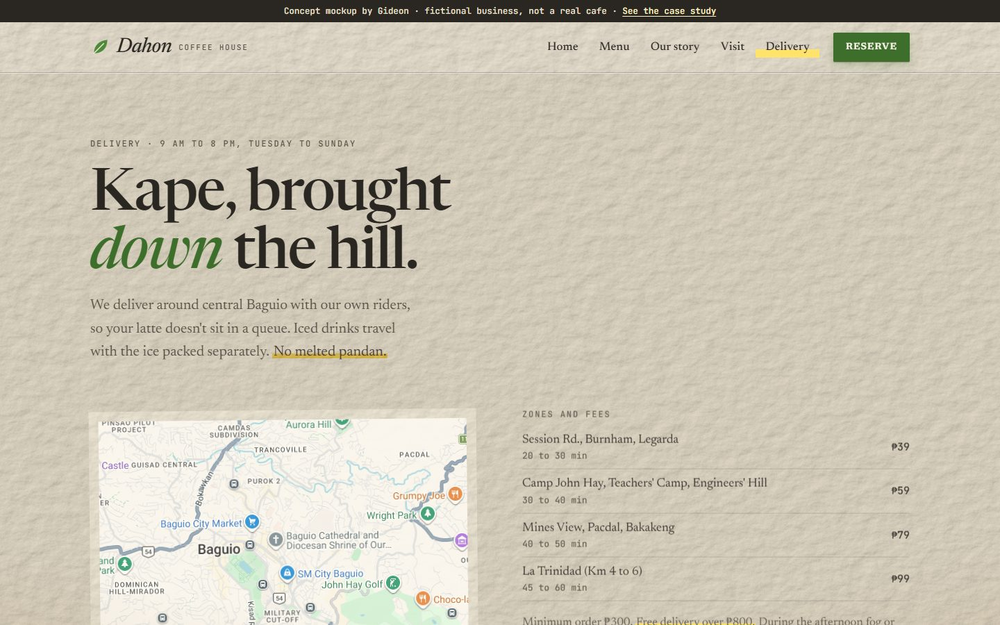

01
Home
Hero photo, signature drinks, a torn note with today's specials, and opening hours.
A five-page site for a made-up neighbourhood cafe. Warm, matte and printed on lit paper.
Noise is run through an SVG lighting filter and baked into a tile, so the page looks like real fibrous paper.
Notes and menu cards get jagged clip-path edges and a slight tilt, like slips pinned to a board.
Pandan green, the leaf in the name, goes only on the main button and a few accents. Ink stays warm, never pure black.
Hero photo, signature drinks, a torn note with today's specials, and opening hours.

Coffee, ube and pandan lattes, tablea, ensaymada and more, filtered by tabs and priced in pesos.

Hours, a Google Map and a reservation form. Demo only, nothing is sent.

How the cafe started, beans from Benguet and Sagada, and a photo gallery.

A Google Map of the delivery area, fees by zone, and a live estimate that checks the minimum order, free-delivery threshold and rider hours.
Dahon Coffee House is not a real business. The paper, torn edges and notes are drawn with CSS and SVG; the food and place photos are free Unsplash shots, warmed slightly to sit on the paper.